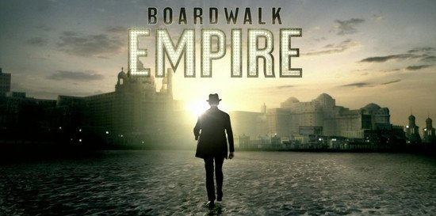
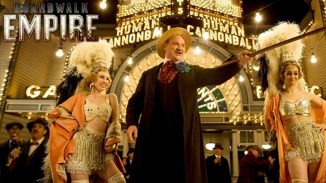

Boardwalk Empire
Dec 29, 2010 · 3 minute read · CommentsHobbies

Últimamente me he aventurado a comenzar series como The Walking Dead, Community o la que nos ocupa en estos momentos, Boardwalk Empire. He de reconocer que la apertura de miras ha venido bien pues no me he sentido demasiado decepcionado en ningún caso. ¿Quién sabe? Puede que sea un conformista. Como varias de las series de la HBO, estamos ante una obra de monóculo. La mano de Martin Scorsese se nota aunque sólo se haya visto involucrado de pleno en el episodio piloto. En cualquier caso, Terrence Winter ha hecho un estupendo trabajo. En las siguientes líneas ofrezco mi opinión, libre de criterio o sentido alguno.
Crimen durante la Ley Seca
Boardwalk Empire está ambientada en la Atlantic City de los años 20, época de la “Ley Seca”. Se nos presenta un mundo de antiguas costumbres corrupto hasta la médula. Un favor por aquí, un fajo de billetes por allá, ahora un ajustes de cuentas y luego unas partidas en el casino. Ya saben, las cosas que hacen los mafiosos para poner un plato sobre la mesa. Por encima destaca el político Enoch Thompson, alias Nucky encarnado por un espectacular Steve Buscemi. Básicamente nos cuenta la historia de los trapicheos y los conflictos de poder entre gremios del crimen organizado. Por supuesto, aderezado con una buena ración de burdeles a cascoporro.

Cabarets, fiestas y políticos
No se puede decir que sea una serie de acción en la que la tensión se mantenga en lo más alto durante cada minuto. Muchos le achacan que es demasiado lenta y podrían tener razón. No obstante, la ambientación y las interpretaciones absorben casi toda la responsabilidad. ¡Ojo! Sin que se les arrugue la camisa para la fiesta en el cabaret, oiga.
El mundo del alcohol, el politiqueo, la dialéctica y las apariencias aparece reflejado constantemente. Decir “lo siento cariño, esta noche llegaré tarde porque tengo asuntos de negocios” para acabar en un burdel mientras se cierra el acuerdo es el procedimiento habitual. Boardwalk Empire hace caso omiso de los tabús sin llegar a blandir lo explícito como arma. Se abre ante el espectador un mundo de matices que cobra vida y se llena de luces de neón durante la noche. Queda patente que nadie tiene una integridad inquebrantable.
De la mano de Steve Buscemi y la mayoría del reparto presenciaremos un magnífico despliegue de interpretaciones. Actuaciones creíbles que crean una atmósfera densa, de una tensión palpable. Sin duda, merece la pena.
Damas y caballeros, aún hay más
Como muchos sabréis, HBO ha confirmado una segunda temporada de Boardwalk Empire ante su buena acogida. La serie fue nominada a un Globo de Oro por mejor serie dramática entre otros galardones. ¿Me he quedado con ganas de más? Sin duda, aunque necesito digerirla un poco antes de una nueva temporada, me vendrá bien el descanso. Si estáis dispuestos a sentaros pacientemente y disfrutar de un buen guión, adelante, es una producción con “qualité”.